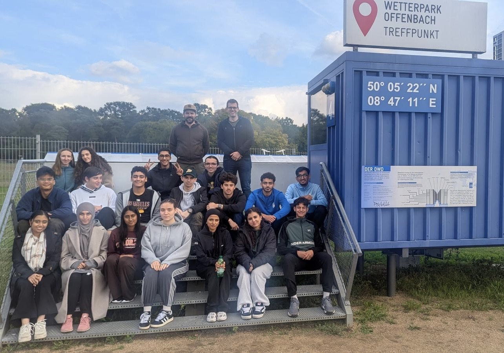

Auf dieser Seite habe wir unser Projektjahr dokumentiert: wohin wir gefahren sind, was wir gelernt haben und was wir daraus gemacht haben.
Kapitelübersicht
Über das Projekt
Wir sind in der 12. Klasse im Mathe LK der Toni-Sender-Oberstufe und beschäftigen uns mit dem Klima unter anderem, weil man mit komplizierten Matheformeln das Wetter „vorhersagen" kann und das Klima in weiter Zukunft prognostizieren kann. Außerdem finden wir die politischen Aspekte der Klimagerechtigkeit interessant, denn es ist gut zu wissen, dass andere, oft ärmere Länder, die Nebenwirkungen von Naturkatastrophen durch andere Länder erleben, die wohlhabender sind. Auf dieser Webseite werdet ihr erfahren, was wir auf unseren Profiltagen erlebt, recherchiert und gelernt haben. Euch zeigen wir was der Unterschied zwischen Klima und Wetter ist, wie man das Wetter berechnen und vorhersagen kann und wie die Klimaprobleme entstehen und durch gesellschaftlichen Zusammenhalt gelöst werden können. Außerdem stellen wir euch Klimadaten aus verschiedenen Ländern vor, die die Auswirkungen des Klimawandels in den letzten Jahren zeigen.
